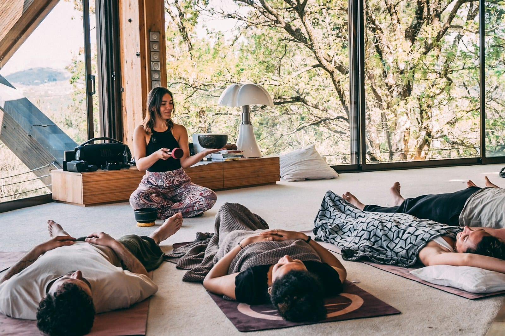

RESEARCH
Do sound baths work?
Here's what the studies of singing bowls and sound meditation have found, how small those studies tend to be and what the reviews conclude, plus what a sound bath can reasonably offer your team or group.

- People often say they feel calmer and less tense after a sound bath, and a few small studies found the same.
- No health benefit is proven. A 2020 review couldn't recommend singing bowl therapies, and a 2025 review said they "may have potential" for anxiety, low mood and sleep.
- What people say they feel and what instruments measure don't always match, with singing bowls and with music for sleep.
Someone sits up after a sound bath and says it’s the most relaxed they’ve felt in months. Then somebody else asks whether any of that’s real. We book sound baths, so we looked into the research on them. There isn’t much of it yet.
Do sound baths really work? #
If by “work” you mean feeling calmer and less tense afterward, a few small studies suggest they can. The best-known one, from 2017, surveyed 62 adults (average age about 50) before and after sound meditations of about an hour, played on singing bowls, gongs and bells. Afterward, people reported less tension, anger, fatigue and low mood.
The authors called it “a nonrandomized observational study without a control group,” so there was no group of people who skipped the session to compare against. Everyone there had also chosen to come, and lying still for an hour can be relaxing on its own.
In a 2023 trial, 50 adults who were feeling anxious were assigned at random to one session of singing bowls, one session of a standard relaxation exercise (tensing and releasing each muscle group), or a waiting list. Both sessions lowered anxiety compared with waiting, and the singing bowls lowered it a little more. There were about 17 people in each group, though, and everyone had one session and was measured right afterward.
Are sound bath benefits scientifically proven? #
They haven’t been proven yet. A 2020 review looked for every published study of singing bowls and health and found four. Its conclusion was “we cannot recommend singing bowl therapies at this stage.” A 2025 review found 19 studies, of mixed quality, and said singing bowls “may have potential” for anxiety, low mood and sleep.
What people feel and what instruments measure can also differ. In a 2020 study, 48 healthy adults lay in a hammock over a large bowl, once with the bowl struck and once with it silent. They said they felt slightly less sleepy after the struck bowl, while a measurement of sleepiness taken from the pupils of their eyes showed no difference. One of the authors owned the foundry that makes the bowls, and the paper says so.
The same pattern shows up with music and sleep. The Cochrane review of music for insomnia, which pulls the trials together, found that people who listen to music at bedtime report sleeping better, while the instruments that measure sleep show very little change. Learn more in a longer read on whether music helps you sleep.
We didn’t find any study showing that particular frequencies or vibrations do specific things to the body, or that a sound bath treats any condition.
What happens in a sound bath? #
The sound bath we book is Firstwater’s. It’s 75 minutes with one facilitator, who brings the sound system, the mats and the blankets. People lie down, the lights go low, and there are live instruments played over music composed for the session. Anyone who can’t lie on a mat can rest in a seat, and nobody is asked to speak or share.
What can a sound bath offer? #
A sound bath is an hour or so of rest, with sound that a lot of people find easy to relax to. For a team, a studio or a retreat, that’s a reasonable thing to want, and it’s a good reason to book one.
Find out more about booking a daytime sound bath for a studio, an office or a program.
Sources
- Goldsby, T. L., Goldsby, M. E., McWalters, M., and Mills, P. J. (2017). Effects of singing bowl sound meditation on mood, tension, and well-being: an observational study. Journal of Evidence-Based Complementary & Alternative Medicine. Read the source
- Rio-Alamos, C., Montefusco-Siegmund, R., Cañete, T., Sotomayor, J., and Fernandez-Teruel, A. (2023). Acute relaxation response induced by Tibetan singing bowl sounds: a randomized controlled trial. European Journal of Investigation in Health, Psychology and Education. Read the source
- Stanhope, J., and Weinstein, P. (2020). The human health effects of singing bowls: a systematic review. Complementary Therapies in Medicine. Read the source
- Cai, Y., and others (2025). Therapeutic effects of singing bowls: a systematic review of clinical studies. Integrative Medicine Research. Read the source
- Bergmann, M., and others (2020). Effects of singing bowl exposure on Karolinska sleepiness scale and pupillographic sleepiness test: a randomised crossover study. PLoS ONE. Read the source
- Jespersen, K. V., Pando-Naude, V., Koenig, J., Jennum, P., and Vuust, P. (2022). Listening to music for insomnia in adults. Cochrane Database of Systematic Reviews. Read the source